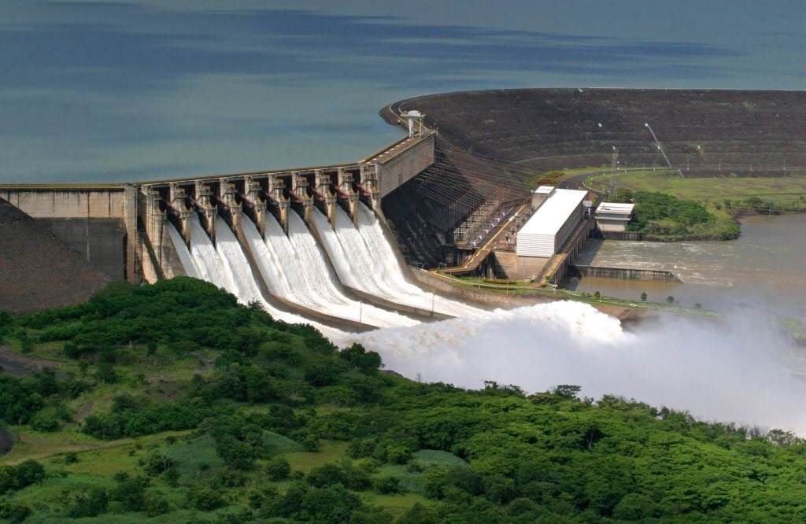

Energia Hidrelétrica

A energia hidrelétrica é aquela obtida pela força das águas. Essa energia é produzida pelo aproveitamento do potencial hidráulico, ou seja, da força das águas dos rios, mediadas pela construção de usinas hidrelétricas, aquelas que fornecerão energia elétrica para a população.
Energia Hidrelétrica no Brasil
Importante destacar que no Brasil mais de 90% da energia elétrica produzida são fornecidas pelas usinas hidrelétricas uma vez que o país possui grande quantidade de rios caudalosos sendo seu potencial hidráulico (Bacias: Amazonas, São Francisco, Tocantins, Paraná, Uruguai) o terceiro melhor do mundo, depois da Rússia e da China.
Como funciona a Energia Hidrelétrica?
A energia hidrelétrica é produzida nas usinas hidrelétricas consoante o processo de transformação de energia potencial, cinética e mecânica que, por sua vez, chega para a população em forma de energia elétrica transportada pelos fios. Em outras palavras, a usina hidrelétrica aproveita a energia hidráulica para a produção de energia elétrica.
Vantagens e Desvantagens da Energia Hidrelétrica
A despeito de ser considerada uma energia renovável, limpa (não emite poluentes na atmosfera), a energia hidrelétrica uma vez que precise da construção de usinas hidrelétricas para ser produzida, acarreta alguns impactos ambientais, a saber: alagamento de áreas, destruição de ecossistemas (fauna, flora, solo), extinção de espécies, destruição de comunidades ribeirinhas, quilombolas e indígenas.
Nesse sentido, importante ressaltar que para a construção de uma usina hidrelétrica, os locais determinados são afastados dos centros urbanos, porém próximo de muitas comunidades que vivem da terra, da caça, da pesca.
Curiosidades
- Quase 20% da energia elétrica mundial é fornecida pelas usinas hidrelétricas.
- Além da Rússia, China e Brasil, outros países que possuem muito potencial hidráulico são: Estados Unidos e Canadá.
- A palavra "hidrelétrica" vem do grego "hydro" significa água e do latim "electricus" refere-se ao âmbar, aquele que produz eletricidade.